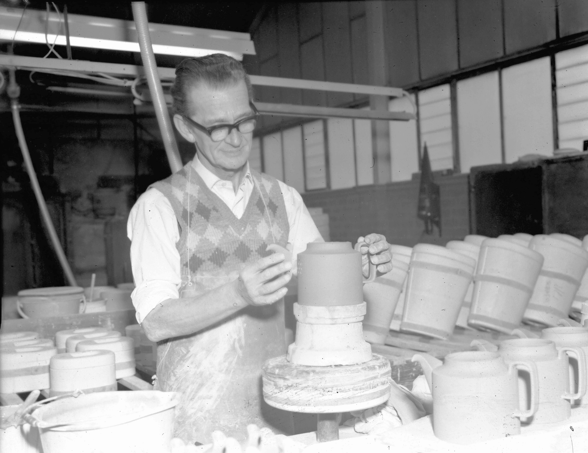
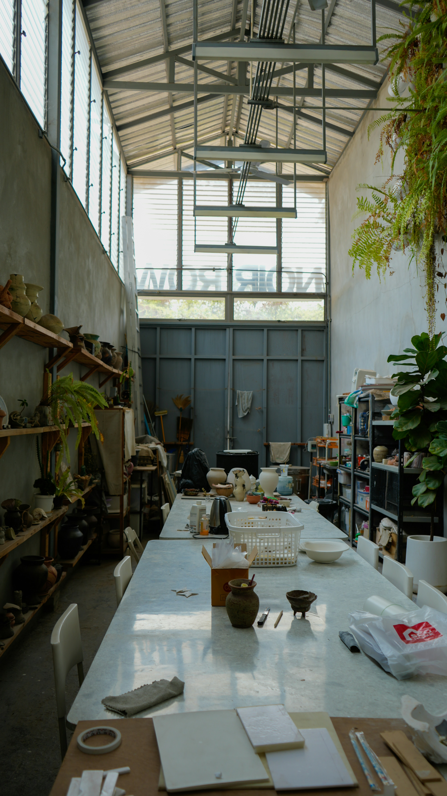

Welcome to Studio Crame
At Studio Crame, we create minimalist, wheel-thrown ceramics rooted in tradition and being close to nature. Each piece is made by hand, shaped on the wheel with attention to proportion, balance, and use. Our work values simplicity, durability, and quiet beauty objects designed for daily life and long service accompanying you in your daily life, making every use special without notice.
Explore our latest collection
Working in small batches, we allow the process to remain slow and deliberate. Subtle variations in form and surface are embraced as a record of the hand and the wheel. Each firing completes the work, resulting in pieces that feel considered, grounded, and meant to be used every day.


Our story

Our story begins in 1979, when founder Simon Albert shaped his first pieces of clay by hand. What started as quiet experimentation—learning how earth, water, and fire could come together—quickly grew into a lifelong practice rooted in patience, curiosity, and respect for the material. Over the years, Simon’s work evolved alongside his understanding of ceramics: how subtle changes in form, glaze, or temperature can transform a piece entirely. Each object became not just something to use, but something to live with—meant to be held, worn by time, and woven into daily rituals. The studio was founded as a natural extension of that philosophy. It is both a working space and a gathering place, where traditional techniques meet thoughtful design and where making is treated as a slow, intentional act. Every piece that leaves the studio carries the same values that shaped those first works in 1979: craftsmanship, integrity, and a deep appreciation for the handmade. Today, the studio continues to honor its origins while embracing new ideas, always guided by the belief that ceramics are at their best when they are both beautiful and useful—objects made to last, and to be loved.
Contact

We believe that creativity is for everyone, that is why our studio hosts events (team-buildings, bachelorette's, birthday), and monthly wheel-throwing classes. Places are limited. It is also possible to rent out the studio for private events and workshops. For more information please send us an e-mail or come visit us on the adress below.
- Address: Keramikvägen 7
- 271 42 Skogvik
- Sweden
- E-mail: crame@studio.com